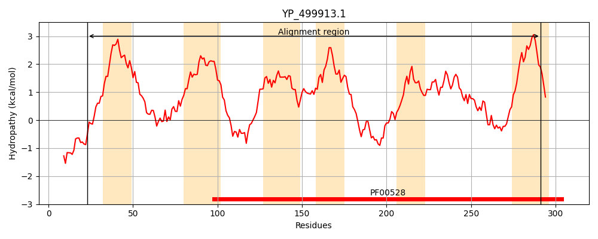
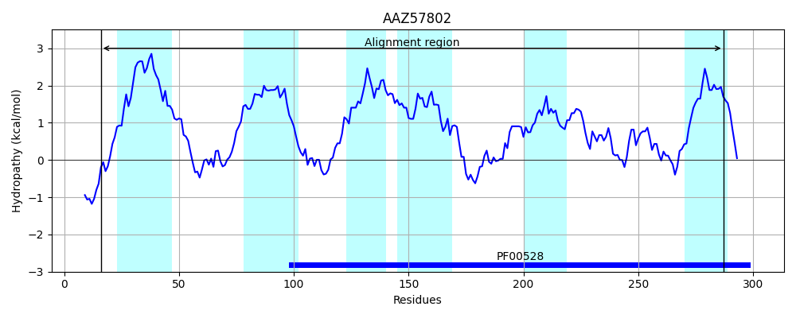
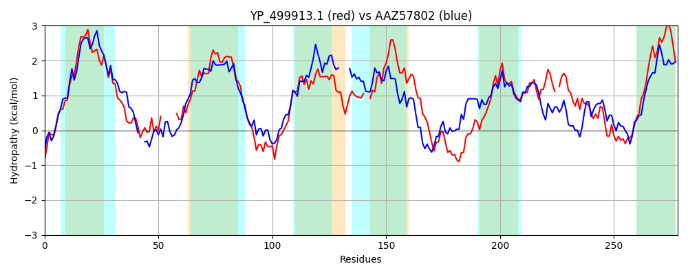

Hit Accession: AAZ57802
Hit TCID: 3.A.1.7.6
Hit Description: gnl|BL_ORD_ID|1023 gnl|TC-DB|AAZ57802|3.A.1.7.6 phosphate ABC transporter membrane protein 2, PhoT family [Prochlorococcus marinus str. NATL2A]
Mach Len: 278
e:0.000000
Query TMS Count : 6
Hit TMS Count: 6
TMS-Overlap Score: 5.450000
Predicted Substrates:CHEBI:5926;triphosphate(5-)
BLAST Alignment:
Score: 368 , Bit scores: 146 bits, E-value: 7.1e-42, Alignment length: 278, Percentage identity: 31
Query: 23 SRTVKNKVFKLIFLACTLLGLVVLIALLTQTLIKGVSHLNLQFFTNFSSSTP------SMAGVKGALIGSLWLMLSIIPLSIILGIGTAIYLEEYAKNNKFTQFVKISISNLAGVPSVVFGLLGYTLFVGGAGIEALKMGN--SILAAALTMTLLILPIIIVSSQEAIRAVPNSVREASYGLGANKWQTIRRVVLPAALPGILTGFILSLSRALGETAPLVLIGI-PTILLATPRSILDQFSALPIQIFTWAKMPQEEFQNVASAGIIVLLVILILMN 291
+R + NK + ++ ++ LI +++ LIKG S++NL T P S G+ A+ G+ + + +SI +G+G IYL EY+K+ KF +F++ + LAGVPS++ G+ Y + V + G+ S +A +++++L++P II ++ EA++ VPN +R A++G+GA+K+ I + LPAA I TG +L+L+RA GETAPL+ + + + + + +L + I+ +A P E +A A +L+V+L+ +N
Sbjct: 16 TRNIGNKALTIASALFAIISVLPLILVISYVLIKGGSYINLD--TLILEPEPPGDDLLSAGGIGPAITGTFIMSVIASIISIPVGVGGGIYLAEYSKSGKFAKFIRFGSNVLAGVPSIIAGVFIYAIIVS----TKILFGSMFSGIAGGISLSILMVPTIIKTTDEALKLVPNDMRRAAFGVGASKFTMITNITLPAAFSSISTGVLLALARAAGETAPLIFTALFSRYYITSFDDLFYEMGSLSVLIYNFALEPYEAQNQLAWAASFILVVVLLSLN 287 | Protein Hydropathy Plots: |
|---|
|  |  |
Pairwise Alignment-Hydropathy Plot:
|
|---|
|  |